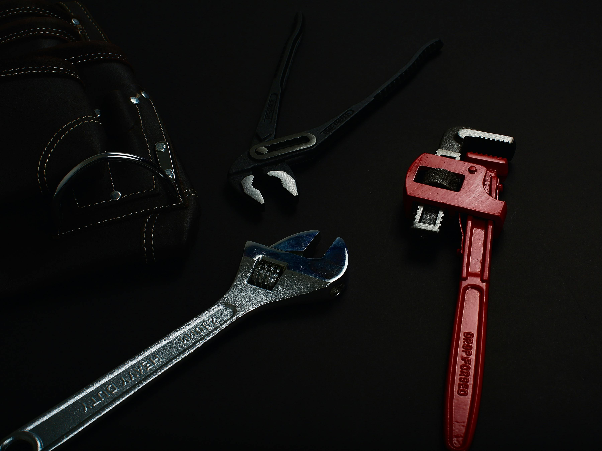
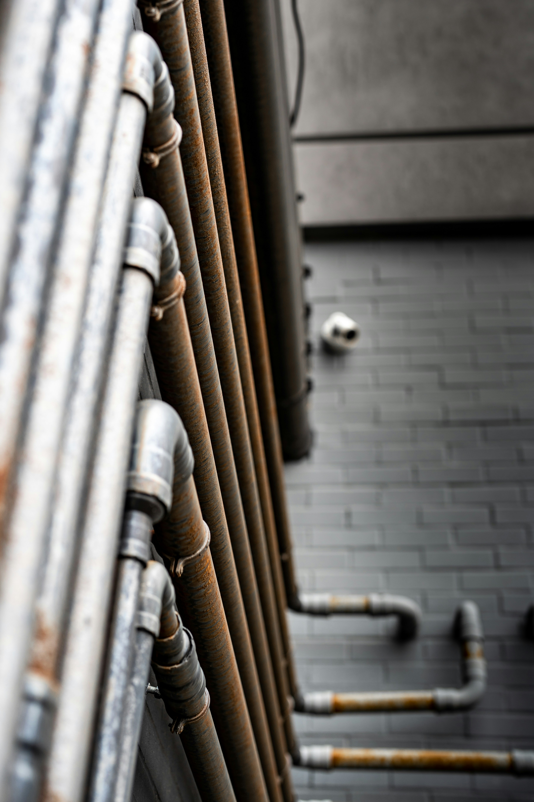
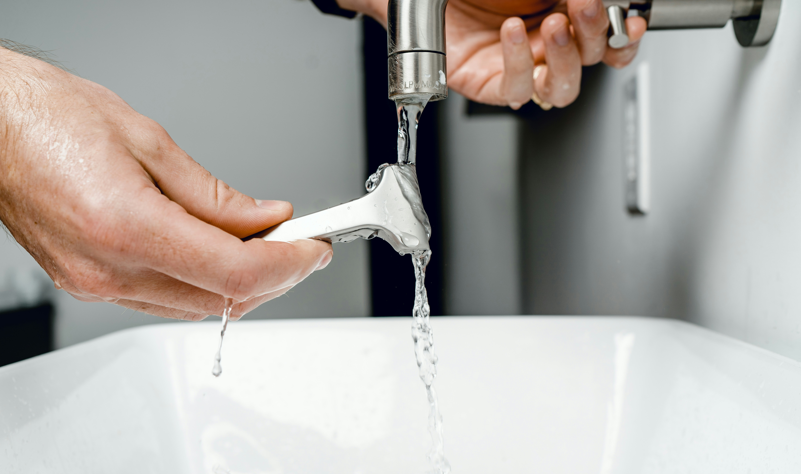

Installation sanitaires
Pose et raccordement de baignoires, douches, lavabos et WC dans vos espaces.
Plomberie Durand intervient à Saint-Nazaire et dans tout le bassin nazairien pour tous vos travaux de plomberie, sanitaires et dépannage urgent.
De l'installation sanitaire au dépannage express, Plomberie Durand couvre tous vos besoins à Saint-Nazaire et alentours.
Pose et raccordement de baignoires, douches, lavabos et WC dans vos espaces.
Intervention rapide 7j/7 pour fuites, ruptures de canalisation et pannes.
Installation et remplacement de chauffe-eaux électriques et thermodynamiques.
Débouchage par hydrocurage ou furet de toutes vos évacuations bouchées.
Rénovation complète clé en main, de la plomberie au carrelage.
Recherche non destructive de fuites avec matériel thermique et acoustique.
Pose de WC suspendu avec bâti-support intégré et plaque de déclenchement.
Installation et entretien de VMC simple flux et double flux.
Quelques exemples de chantiers réalisés à Saint-Nazaire et dans le bassin nazairien.





Plomberie Durand intervient à Saint-Nazaire et dans tout le bassin nazairien pour tous vos travaux de plomberie, sanitaires et dépannage urgent. Marc Durand et son équipe répondent présent 7j/7, avec un service rapide, transparent et sans mauvaises surprises.
Plomberie Durand intervient dans un rayon de 30 km autour de Saint-Nazaire.
Plus de 1 200 interventions réalisées — voici quelques retours de nos clients satisfaits.
Fuite importante un dimanche matin, Marc est arrivé en moins d'une heure. Réparation rapide et efficace, sans dégât supplémentaire. Un vrai pro de confiance, je le recommande sans hésiter.
Dépannage urgenceRénovation complète de ma salle de bain, du sol au plafond. Le résultat est bluffant ! Marc a su coordonner tous les corps de métier et respecter le budget annoncé à l'euro près.
Rénovation salle de bainInstallation d'un chauffe-eau thermodynamique, travail soigné et bien expliqué. Marc m'a conseillé sur le meilleur modèle pour ma consommation. Très satisfait et économies au rendez-vous.
Chauffe-eau & ballonTout ce que vous devez savoir avant de nous appeler.
Devis gratuit sous 24h · Urgences traitées immédiatement par téléphone
Nous vous répondrons sous 24h. Pour une urgence, appelez directement le 06 87 65 43 21.